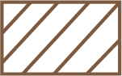
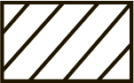
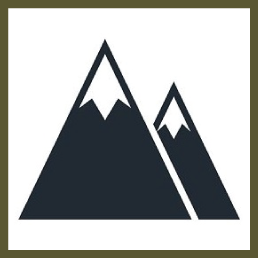
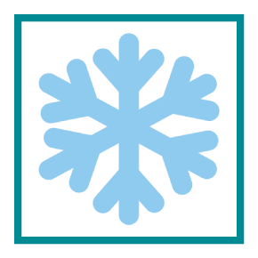
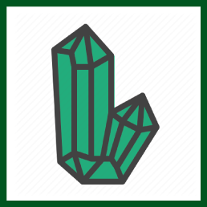
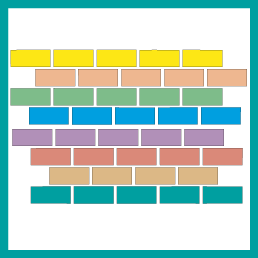
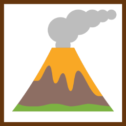

Геологічна спадщина
Структурне районування*
Східно-Європейська давня (дорифейська) платформа
| Український щит (у межах занурення фундаменту по ізогіпсі -300 м) |
| Волинсько-Подільська плита |
|  | Львівський палеозойський прогин |
| Стрийський юрський прогин |
| Причорноморська крейда-палеогенова западина |
| Дніпровсько-Донецька мезозойська западина |
|  | Південний схил Воронезького кристалічного масиву |
Скіфська епіпалеозойська плита
| Центральнокримське крейда-палеогенове підняття |
Складчасті споруди та прилеглі до них комплекси
Герцинські
| Донбасу |
| Північної Добруджі, змінена кімерійською складчастістю |
| Переддобруджинський кам’яновугільно-ранньотріасовий крайовий прогин |
| Кімерійсько-альпійська складчаста споруда Кримських гір та Керченського півострова |
Альпійські
| Українські Карпати |
| Закарпатський внутрішній міоцен-ліоценовий прогин |
| Передкарпатський міоценовий крайовий прогин |
Геологічні пам’ятки*
|  | геоморфологічні |
|  | гляціологічні |
| ландшафтні |
|  | мінерально-петрографічні |
| палеонтологічні |
|  | стратиграфічні |
|  | тектонічні |
* за матеріалами: «Геологічні пам’ятки України» у 4 т. / Державна геологічна служба України, Український державний геологорозвідувальний інститут, за ред. В. І. Калініна, Д. С. Гурського. Київ: 2006-2011